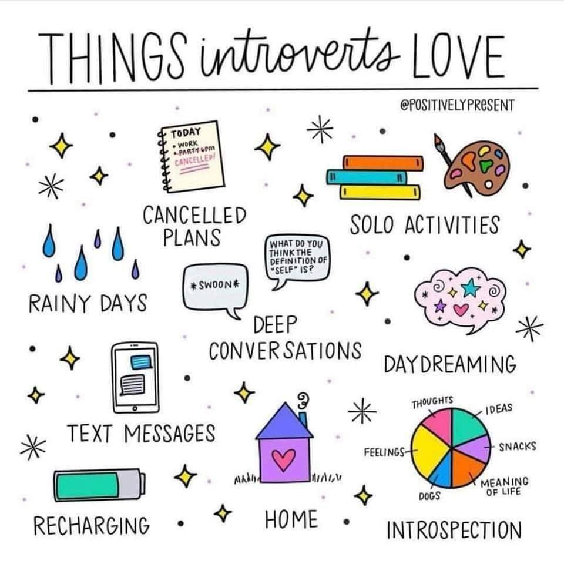

Универсальной формулы заботы о себе не существует. Каждому из нас требуется что-то свое. Забота о себе помогает остановить спираль разрушительных эмоций. Она дает возможность вернуться в равновесие, когда вокруг, кажется, все распадается на части. Это ваш лучший союзник, когда дело доходит до здоровой, счастливой и наполненной жизни.
Развивайте внимание к своим чувствам и старайтесь понимать, почему вы их испытываете. У вас есть эмоции и для вас, как для человеческого существа, это совершенно нормально. Никакие эмоции не делают вас плохим человеком. В вашей жизни всегда были и будут периоды эмоционального беспорядка, плохие дни, когда не радует ничего, что бы вы ни делали. Будьте терпеливы и заботливы с собой, как были бы с теми, кого вы по-настоящему любите. Вы можете начать эмоциональную заботу о себе прямо сейчас, просто изменив тон вашего внутреннего голоса. Пусть этот голос будет тем, кто мудро и по-доброму поддерживает вас, а не обвиняет и оскорбляет. Со временем этот внутренний голос может стать самым большим для вас источником комфорта.
Личная забота о себе — это раскрытие своей истинной сути. Речь о том, чтобы забыть обо всем, чему вас учили в детстве и найти собственный путь. Речь о том, чтобы узнать, что вам нравится по-настоящему и кем вы становитесь, когда рядом никого нет.
Влюбитесь в себя. Во все ваши качества и причуды. Жизнь — не о том, чтобы быть для других людей. Жизнь — о том, чтобы быть для себя. Подумайте, чего вы действительно хотите от жизни, а затем решите, какие шаги вы можете предпринять, чтобы туда попасть.
Будь вы интравертом, экстравертом или кем-то промежуточным, независимо от этого, вам нужно знать, что вас удовлетворяет в социальном плане. То, кем вы себя окружаете, оказывает огромное влияние на то, как вы себя чувствуете.
Интроверты «подзаряжаются» наедине с собой. Я сама неистовый интроверт и от долгого эмоционального контакта быстро истощаюсь. Мне необходимо «обнулиться», чтобы восстановить энергетику — и это я могу делать только в одиночестве. Если вы интроверт, есть вероятность, что в вашей жизни есть кто-то, кто не понимает, почему в пятницу вечером вы хотите остаться дома с книжкой или альбомом для рисования. И тоже предупреждение — убедитесь, что вы все же получаете некоторую социальную стимуляцию и не превращаетесь в затворника.
Экстраверты же, наоборот, заряжаются в обществе других людей. Они предпочитают чаще бывать в социальных ситуациях и получают энергию от массированного общения. Если вы экстраверт, но слишком заняты работой и домашними хлопотами, так что начинаете чувствовать себя одиноким и изолированным, ищите способы больше общаться с друзьями. (Однако, не позволяйте вашей экстраверсии быть опорой для вашего благополучия. Уметь не скучать наедине с собой тоже важно)
Для душевного равновесия необходимо:
Забота о себе относится ко всем сферам жизни. Профессиональная забота означает продолжение обучения, развитие мастерства и профессиональный рост. Убедитесь, что ваша работа не делает вас несчастными и не препятствует вашему росту. Установите четкие границы между работой и домом. Финансовая забота означает составление и ведение подходящего именно вам бюджета, своевременную оплату счетов, разумную экономию для достижения своих целей.
Забота о себе — не каприз и не легкомыслие. Это смелый и сильный поступок, который говорит за вас: «Я позабочусь о себе таким образом».
На страницу о моде и стиле